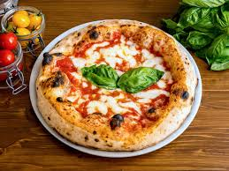
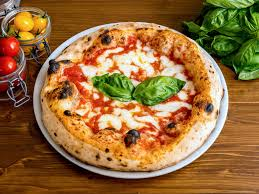

Worlds Best Cuisine
Indian Cuisine
Indian cuisine originated from the Indus Valley Civilization, influenced by crops like wheat and livestock. The Aryans introduced a new language and culture, while various groups like Persians, Greeks, and Muslims brought their own culinary traditions. Further, enriching Indian cuisine over time.


Chinese Cuisine
The earliest known Chinese cookbook dates back to the Han Dynasty (206 BC-220 AD), and it is believed that Chinese cuisine began to take shape during the Shang Dynasty (16th-11th century BC). Over the centuries, different dynasties and regions developed their own unique styles of cooking.


Japanese Cuisine
For centuries, fish has been the main staple of the Japanese diet — in fact, meat was rarely eaten in Japan until 1872, following a 1,200 year ban. Surrounded by water and filled with streams blessed with freshwater fish, it's only natural fish remains the primary source of protein for the island.
Mexican Cuisine
Its earliest roots lie in Mesoamerican cuisine. Mexican cuisine ingredients and methods begin with the first agricultural communities such as the Olmec and Maya who domesticated maize, created the standard process of nixtamalization, and established their foodways.


Italian Cuisine
Italian cuisine started to form after the fall of the Roman Empire, when different cities began to separate and form their own traditions. Many different types of bread and pasta were made, and there was a variation in cooking techniques and preparation.
 
